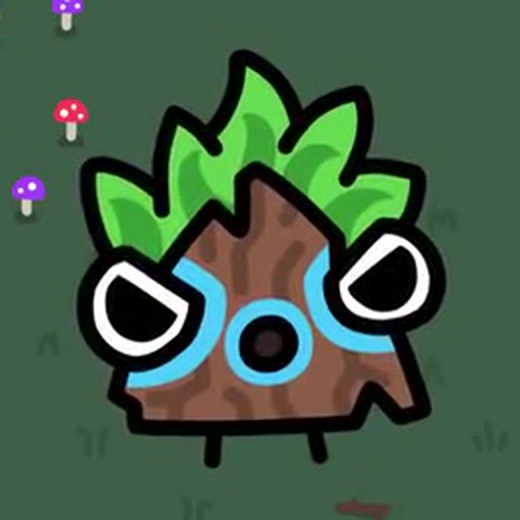

Dart Tri Goober Tuning
Reference

Base Plan
base.png is intentionally pending. Use the locked reference and prompt packet in brief.md to generate the clean base before final tuning.
Rig
Loading rig.json...

base.png is intentionally pending. Use the locked reference and prompt packet in brief.md to generate the clean base before final tuning.
Loading rig.json...